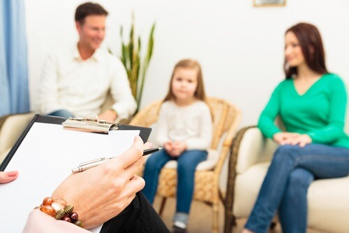

Детский психолог в г. Мытищи: аспекты готовности ребенка к школе
Психологическая подготовка к школе (от 5 до 7 лет)
Новая социальная позиция школьника требует от детей достаточно большого адаптационного потенциала. Ребенок сталкивается с отличными от привычных понятий режимом, правилами и людьми. Отсутствие определенных навыков, знаний приводит к проблемам в отношениях с родителями, снижению качества учебного процесса. Предотвратить подобные последствия в перспективе поможет детский психолог в г. Мытищи в нашем центре развития: он изучит текущее состояние вопроса, обеспечит заполнение обнаруженных пробелов.
4 составляющие психологической готовности:
- Личностно-социальная. К положительным признакам с этой точки зрения относят развитые коммуникативные навыки, способность идти на контакт как со сверстниками, так и взрослыми людьми, способность адекватно оценивать свои действия и реагировать на критику. Ребята, подготовленные в этом аспекте, радуют примерным поведением родителей и учителей. Психолог перед поступлением в школу необходим детям, плохо знакомым с правилами общения, не имеющим элементарного представления о субординации, склонным к агрессии, а также замкнутым.
- Эмоционально-волевая. Выражается в детской организованности, дисциплинированности в отношении выполнения поставленных задач, включая те, которые им не особо нравятся (например, так называемые нелюбимые школьные предметы). Подготовленным можно считать ребенка, стремящегося усвоить содержание требований родителя или учителя, подчинить им свое поведение. Психолог здесь играет роль направляющего: помогает будущему первокласснику наладить механизмы регулирования привычек, научиться удерживать внимание на новых, не всегда привлекательных задачах.
- Интеллектуальная готовность. Количество знаний значения не имеет, если человек не способен использовать их на практике - проверенное временем утверждение актуально и для юных умов. Ребенка можно назвать подготовленным, если он в состоянии не просто усваивать, но также обобщать, систематизировать информацию, анализировать ее и делать выводы. В приоритете мышление, память и логика. Интеллектуально развитые дети быстро "догоняют" сверстников по школьной программе, даже если изначально их уровень владения письмом, чтением был заметно ниже. Психолог сможет оценить текущий потенциал ребенка, провести дополнительные занятия самостоятельно и подсказать родителям, каким вопросам следует уделить наибольшее внимание.
- Мотивационная. Известная в среде врачей шутка гласит: если человек хочет жить - медицина бессильна. Аналогичный принцип актуален и при подходе к образовательному процессу. Аспекты готовности к школе находятся в тесной связке, взаимозависимы друг от друга. Поэтому даже социальные навыки, воля и интеллект отходят на второй план, когда у ребенка отсутствует интерес к занятости в школе. Распространенные стереотипные стимулы со стороны родителей - угрозы наказания, хорошее отношение в обмен на отличные оценки и пр. - в будущем становятся причиной детских неврозов, потери ребенком уверенности в себе. Как следствие - падение качества, успеваемости, агрессия и конфликтность или, наоборот, замкнутость. Детский психолог здесь необходим, чтобы ненавязчиво и безболезненно сформировать положительное отношение потенциального первоклассника к школе, учителям, будущим соседям по парте. Акцент делается главным образом на интересах ребенка и их пересечении с деятельностью образовательного учреждения, а также возможных результатах направленного труда.
Детский психолог в г. Мытищи реализует подготовительную программу для юных школьников, которая учитывает личностно-социальный, эмоционально-волевой, интеллектуальный и мотивационный аспекты. Систематические занятия в нашем центре увеличивают шансы на успешную и быструю адаптацию ребенка к новым обстоятельствам. Важно понимать, что освоение школьной среды - одна из ступеней, за которыми следуют поры студенчества и выхода на работу.
Закрепленные в юные годы навыки наиболее устойчивы, и подготовка к занятиям в первом классе станет первым примером того, что положительный результат является следствием труда.
Подготовку ведет детский психолог: Вальдман Анна Сергеевна.
© детский центр "Совенок". Все права защищены. 2016-2018